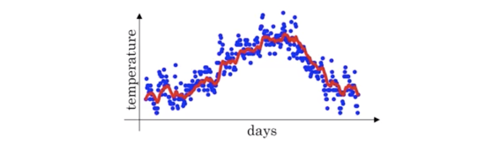

优化
梯度下降
优化问题：L(w)\rightarrow \min_{w}，初始化参数：w^{0}。梯度向量：
\nabla L(w^{0})=(\frac{\partial L(w^{0})}{\partial w_{1}}, \frac{\partial L(w^{0})}{\partial w_{2}}, ..., \frac{\partial L(w^{0})}{\partial w_{n}})
参数更新
w^{t+1} = w^{t} - \eta_{t}\nabla L(w^{t})
收敛时停止更新：
\left \| w^{t+1}-w^{t} \right \| < \epsilon
梯度下降一次计算全部的样本，但内存有一定允许，这时使用随机梯度下降（SGD）更新。
L(w) = \sum_{i=1}^{n}L(w; x_{i}, y_{i}) \rightarrow \min_{w}
i_{1}, i_{2}, ..., i_{m} = random indice between 1 ~ n
g_{t} = \frac{1}{m}\sum_{j=1}^{m}\nabla L(w^{t};x_{i_{j}},y_{i_{j}})
w^{t+1} = w^{t} - \eta_{t}g_{t}
if \left\| w^{t+1}-w^{t} \right\| \leq \epsilon, finish
指数加权平均
指数加权平均（Exponentially Weighted Averages）是一种数据平滑的方法。公式如下：
\begin{aligned}
V_{t} &= \beta V_{t-1} + (1 - \beta) \theta_{t} \\
&= \beta^{t} V_{0} + \sum_{k = 1}^{t} \beta^{t - k} (1 - \beta) \theta_{k}
\end{aligned}
例如，某地的温度变化
\begin{aligned}
& \theta_{1} = 40^{\circ}\text{F} \\
& \theta_{2} = 49^{\circ}\text{F} \\
& \theta_{3} = 45^{\circ}\text{F} \\
& \vdots\\
& \theta_{180} = 60^{\circ}\text{F} \\
& \theta_{181} = 56^{\circ}\text{F} \\
& \vdots
\end{aligned}
我们可以计算这一段时间的滑动平均值，用参数 \beta = 0.9
\begin{aligned}
& V_{0} = 0 \\
& V_{1} = \beta V_{0} + (1 - \beta) \theta_{1} = 0.9 \cdot 0 + 0.1 \cdot 40 = 4 \\
& V_{2} = \beta V_{1} + (1 - \beta) \theta_{2} = 0.9 \cdot 4 + 0.1 \cdot 49 = 8.5 \\
& V_{3} = \beta V_{2} + (1 - \beta) \theta_{3} = 0.9 \cdot 8.5 + 0.1 \cdot 45 = 12.15 \\
& \vdots
\end{aligned}
V_{t} 是 \frac{1}{1 - \beta} 天内的滑动平均值，例如，\beta = 0.9，\frac{1}{1 - \beta} = \frac{1}{1 - 0.98} = 50。

如果增大 \beta，滑动平均值曲线向右偏移；减小 \beta，曲线将会更加震荡。
因为在真实值和滑动平均值之间存在偏差，我们需要做一些修正 \frac{V_{t}}{1 - \beta^{t}}
Momentum
\bigstar 动量法用来消除震荡
\bigstar \beta 通常是 0.9.
\bigstar 在每一个mini-batch下，我们计算 dW 和 db，之后计算指数滑动平均，并更新 W 和 b。
\begin{aligned}
& V_{dW} = \beta V_{dW} + (1 - \beta) dW \\
& V_{db} = \beta V_{db} + (1 - \beta) db \\
& W = W - \alpha V_{dW} \\
& b = b - \alpha V_{db}
\end{aligned}
RMSProp
\bigstar RMSprop: Root Mean Square Propogation
\begin{aligned}
& S_{dW} = \beta S_{dW} + (1 - \beta) (dW)^{2} \quad \text{where } (dW)^{2} \text{ are element-wise square} \\
& S_{db} = \beta S_{db} + (1 - \beta) (db)^{2} \quad \text{where } (db)^{2} \text{ are element-wise square} \\
& W = W - \alpha \frac{dW}{\sqrt{S_{dW}} + \epsilon} \\
& b = b - \alpha \frac{db}{\sqrt{S_{db}} + \epsilon}
\end{aligned}
Adam
\bigstar Adam 是 Momentum 和 RMSprop 的结合
\bigstar \beta_{1} 是 0.9，\beta_{2} 取 0.999，\epsilon 取 10^{-8}
\begin{aligned}
& V_{dW} = 0, \quad S_{dW} = 0, \quad V_{db} = 0, \quad S_{db} = 0 \\
& V_{dW} = \beta_{1} V_{dW} + (1 - \beta_{1}) dW, \quad V_{db} = \beta_{1} V_{db} + (1 - \beta_{1}) db \\
& S_{dW} = \beta_{2} S_{dW} + (1 - \beta_{2}) (dW)^{2}, \quad S_{db} = \beta_{2} S_{db} + (1 - \beta_{2}) (db)^{2} \\
& V_{dW}^{\text{corrected}} = \frac{V_{dW}}{1 - \beta_{1}^{t}}, \quad V_{db}^{\text{corrected}} = \frac{V_{db}}{1 - \beta_{1}^{t}} \\
& S_{dW}^{\text{corrected}} = \frac{S_{dW}}{1 - \beta_{2}^{t}}, \quad S_{db}^{\text{corrected}} = \frac{S_{db}}{1 - \beta_{2}^{t}} \\
& W = W - \alpha \frac{V_{dW}^{\text{corrected}}}{\sqrt{S_{dW}^{\text{corrected}}}+\epsilon}, \quad b = b - \alpha \frac{V_{db}^{\text{corrected}}}{\sqrt{S_{db}^{\text{corrected}}}+\epsilon}
\end{aligned}
学习率衰减
\begin{aligned}
& \alpha = \frac{\alpha_{0}}{ 1 + \text{DecayRate} * \text{EpochNumber}} \\
& \alpha =\alpha_{0}\cdot \text{DecayRate}^{\text{EpochNumber}} \\
& \alpha = \frac{k}{\sqrt{\text{EpochNumber}}} \cdot \alpha_{0}
\end{aligned}